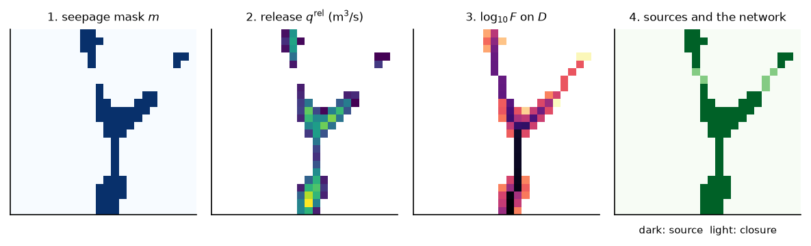

Where the water table reaches the surface#
The model produces sources, not a stream network. A cell where the aquifer releases water to the surface is a point where water appears, not a reach. The simulated network is built from those points, in four levels that should not be confused:
the cells where the water table reaches the drain: the seepage mask;
how much water the aquifer releases in each cell: the release flux;
where the water goes on the descent \(D\): the accumulated flux;
the cells a stream criterion counts as flowing: the simulated network.
The last section lists the diagnostics that compare a network with a mapped one. The criterion a calibration minimises is on Downslope distance between two networks.
Notation of this page
Symbol |
Meaning |
Unit |
Set by |
|---|---|---|---|
\(h\) |
hydraulic head, measured from a fixed datum |
m |
solved, not set |
\(z_\mathrm{top}\) |
model top, the land surface |
m |
|
\(N\) |
recharge rate, positive into the aquifer |
m/s |
|
\(\bar N\) |
recharge averaged over the catchment and a period of time ( |
m/s |
derived |
\(\Phi_{n,p}\) |
flow into cell \(n\) from the stress package \(p\), positive into the aquifer |
m³/s |
|
\(n, m\) |
cell indices; \(\mathcal{N}(n)\) is the set of cells that share a face with \(n\) |
the grid, The mesh |
|
\(a_n\) |
plan area of cell \(n\) |
m² |
the grid |
\(\delta\) |
depth of the sub-cell discharge band of a drain |
m |
|
\(m_n\) |
seepage mask of cell \(n\): 1 where the water table reaches the drain |
derived |
|
\(q^\mathrm{drn}_n\) |
drain outflow of cell \(n\), with the part handed to the mover ( |
m³/s |
derived |
\(q^\mathrm{rel}_n\) |
water the aquifer releases to the surface in cell \(n\) ( |
m³/s |
derived |
\(F_n\) |
drain outflow routed downstream on \(D\) ( |
m³/s |
derived |
\(\tau_\mathrm{s}\) |
share of its own recharge a cell must release to count as a source |
||
\(\Phi_n\) |
release of the sources accumulated down the criterion graph to cell \(n\) |
m³/s |
derived |
\(\Phi_\mathrm{vis}\) |
routed discharge a cell must carry to flow |
m³/s |
|
\(\Sigma\) |
the sources: cells that release more than their threshold |
derived |
|
\(\mathcal{S}\) |
the simulated network: the downstream closure of \(\Sigma\) |
derived |
|
\(D\) |
the descent of the model top |
built with every MODFLOW grid |

Fig. 57 The four levels on a toy valley. The water table is a subdued copy of the
top, not a solve; every step after it is a call of the code:
seepage_mask, the outflow of a drain, accumulate_on_downhill_graph on
\(D\), and build_simulated_network with \(\tau_\mathrm{s} = 0.5\).
In the last map, the light cells join the sources downstream: they carry water
and release none.#
1. The seepage mask#
The water table of a cell is the head of its uppermost layer with a finite head. A cell seeps in period \(t\) when the water table reaches the drain:
With no band, \(\delta = 0\) and the test is against the top (Drains and evapotranspiration at the top of the model). A solver that reports a surface release flux of its own, the Boussinesq solver, uses that flux instead: the cell seeps where the flux is positive. The mask says that the water table reached the ground, not how much water left.
In the code: seepage_mask.
2. The release flux#
The budget gives the flow \(\Phi_{n,p}\) of each package into each cell, negative when the aquifer loses water. The drain outflow \(q^\mathrm{drn}_n\) is the drain flow added to the part handed to the mover, then clipped to its positive part in each layer and summed over the layers. A run whose streams are an SFR network sends most of its water through that package, so the drain alone misses it. The release flux is the union of every path from the aquifer to the surface:
\(\Phi^{\mathrm{stream}}_{n,\mathrm{chd}}\) is the fixed-head flux of the cells
that carry the river role (Fixed heads: the sea, the rivers and the sides), stored as
constant_head_stream. The last term is the surface excess of the Boussinesq
solver, the only path out of that solver, already an outflow. The plain
fixed-head term stays out: a sea or a side boundary is water leaving sideways,
not a release to the surface.
The stream-network criterion reads the same union off the budget, so the network a calibration scores and the network the maps draw come from one quantity. A run stored before the river share of the fixed head was stored lacks that one term.
The release flux is rebuilt on read from the per-cell budget, which a run keeps
by default (simulation.results.keep_per_cell_budget).
In the code: release_flux_stack.
3. The accumulated flux, on D#
The drain outflow is routed downstream on the stored descent \(D\)
(Routing on the mesh: the descent D): the accumulated flux \(F_n\) of a cell is its own
outflow plus that of every cell upstream, the usual flow accumulation on a
single-flow-direction graph [O'Callaghan and Mark, 1984]. High values mark the
confluences and the persistent branches. \(F_n\) is a routed diagnostic: the same
water is counted again in every cell downstream, so the sum of \(F\) over the cells
is not a water budget. Use the budget for a mass balance. \(F\) is the field
accumulation_flux, and the same routing applied to the release flux gives
release_accumulation_flux. The Boussinesq solver, whose store holds a top and no
mesh connectivity, stores a \(D\) built from the D8 pointer of WhiteboxTools on its
filled top, for a raster run, and routes on it.
A cell is active in period \(t\) when a field, \(F\) for instance, exceeds a threshold. A time rule reduces the periods to one mask:
Mode |
Active when |
|---|---|
|
the cell is active at the chosen period, the last by default |
|
the cell is active at least once |
|
the cell is active in at least a given share of the periods |
|
the cell is active in every period ( |
|
not a mask: the share of the periods where the cell is active |
A steady run uses last by default, since it has one state. A transient run uses
persistent, with a share of one half unless another is given. An always-active
mask is active at every period of the window analysed, which is not a steady
network.
The derived fields are not stored: they are rebuilt on read from the per-cell
budget, which a run keeps by default with
simulation.results.keep_per_cell_budget
(see [simulation]).
In the code: accumulate_on_downhill_graph.
4. The simulated network#
The network that a calibration scores, and that the stream maps draw, is not a threshold of \(F\). It is built from the release flux on the graph of the stream criterion (The graph of the stream criterion), in two steps.
The sources. A cell is a source in period \(t\) when its release exceeds a share of its own recharge, strictly:
\(\bar N\) is the unweighted mean of the finite recharge rates over the periods and the cells. The threshold is a flux per unit of area, not a discharge, so that the network follows the physics and not the refinement of the mesh: a fixed discharge would be nine times harsher on a cell three times smaller. A value of zero is the purely geometric criterion. The test is made on the flux, not on the head, which moves a lot when the drain conductance moves. \(\bar N\) is read back from the built model at every trial of a calibration, and a change between two builds is logged as a warning: the threshold is meant to be frozen over a search.
The closure. The simulated network \(\mathcal{S}\) is the downstream closure of the sources: every cell the water of \(\Sigma\) flows through, \(\Sigma\) included. When a visible flow \(\Phi_\mathrm{vis}\) is set, a cell of the closure must also carry it, as the release of the sources routed down the same graph:
The sum runs over the sources whose chain passes through \(n\). The visible flow is a discharge with its unit, or a share of the discharge at the outlet in the same period; zero is the geometric definition. The routed discharge never falls downstream, so the network stays closed downstream whatever the threshold. It is a routed seepage discharge, not a river discharge: no runoff and no bed loss enter it.
The flowing cells are the field simulated_active_network, 1 where a stream
flows and 0 elsewhere. It is rebuilt on read from the release flux (itself
rebuilt from the per-cell budget) and from a stored network on which the graph is
rebuilt. It is never stored, and it needs the release terms of the per-cell
budget, which a run keeps by default.
Over a transient run, the criterion counts, for each complete calendar year, the periods each cell flows, and builds a maximal and a minimal extent from those counts. Durations are counted in periods, never in days. How a network is scored against a mapped one is on Downslope distance between two networks.
In the code: build_simulated_network.
Comparing a network with a map#
A run stores up to three line networks, each under a role:
Role |
The network |
|---|---|
|
the mapped network read from |
|
the reaches of the mapped network that flow all year, when the source says which |
|
the network traced on the routing of the DEM, |
The roles simulated_active and mesh_constraint are reserved names that no run
writes today: the simulated network is the cell field above. A mapped network is
never a model input: it enters a criterion, a figure or a diagnostic, never the
model top or the routing.
Three families of diagnostics compare a mask of active cells \(A\) with a network. None of them is the criterion of a calibration.
Overlap of cells. \(M\) is the set of catchment cells a network crosses, within
an optional buffer, and \(A\) the active cells of a field (by default the
accumulated flux above zero, with the time rule above). The scores are the usual
set scores of \(A\) against \(M\), published as network_coverage_ratio (the share
of \(M\) in \(A\)), active_precision_ratio (the share of \(A\) in \(M\)),
cell_f1_ratio (their harmonic mean) and cell_jaccard_ratio (the intersection
over the union), by cell_field_network_overlap_metrics.
Planar distance. The straight-line distance from each active cell centre to the nearest line of the network is \(\delta_{A\to M}\), and from each network cell centre to the nearest active cell \(\delta_{M\to A}\). Each direction gives its mean, median, 95th percentile and maximum, then
published as bidirectional_distance_mean_m, planar_distance_ratio and its
logarithm planar_distance_log10_ratio (cell_field_network_distance_metrics).
A planar distance ignores the divides. The downslope distance of
Downslope distance between two networks does not.
Overlap of lines. Between two line networks, a reference \(R\) and a candidate
\(G\) (by default the mapped and the generated networks), each buffered by a
tolerance of 50 m by default. The metrics are the share of the reference length
inside the buffer of the candidate (reference_coverage_ratio), the share of the
candidate length inside the buffer of the reference (candidate_match_ratio),
the length ratio length_balance_ratio, the missing and extra shares, their
harmonic mean length_f1_ratio and the Hausdorff distance of the two networks
(Run.hydrographic_network_comparison_metrics).
Assumptions#
The release flux is the whole of what leaves the aquifer for the surface.
The threshold \(\tau_\mathrm{s}\) and the mean recharge \(\bar N\) are frozen over a search.
Limits#
The accumulated flux is not a budget. It counts the same water in every cell downstream.
The simulated network is a mask computed on read. It is not a stored line network.
The size of the threshold. \(\tau_\mathrm{s}\) is a share of a cell’s own recharge. A cell that collects drainage from upslope releases more than the recharge that falls on it, so a small share excludes few cells. No value is given here as the one to use.
Parameters of this page#
Checked by#
The tests that import the code of this page. The box is generated: a new test appears here on the next build.
49 test files import hydromodpy.core.field_routing, hydromodpy.core.stream_network, hydromodpy.core.stream_extent, hydromodpy.results.derive.virtual_fields, hydromodpy.results.derive.views. Their names say what they check.
validation: 1
contract: 1
- Boussinesq descent routes like whitebox.
unit: 47
- A map drawn from the model scores zero. calibration
- Downslope network cost. calibration
- The criterion descends d8 by default. calibration
- A constant head cell passes the water on. core
- A diagonal talweg needs diagonal neighbours. core
- A flat beside the channel drains into it. core
- A head reads the drained area within its radius. core
- A stored descent rebuilds its graph from two arrays. core
- A window leaves the spin up year out. core
- Budget terms. core
- Field routing adjacency. core
- Field routing graph. core
- One surface for the criterion. core
- Seepage fallback warning. core
- Stream extent. core
- The adjacency is built once. core
- The descent takes diagonals on quads and faces elsewhere. core
- Without pins the descent is the plain flood. core
- Simulated active network map. display
- The active persistence counts the criterion flowing. display
- The dark preset reaches the map grounds. display
- A field range reads what each step reads. results
- A partly kept budget refuses its fields. results
- A stored descent reads back as it was written. results
- Accumulation rebuilt on read. results
- Derived watertable. results
- Every budget term has a descriptor. results
- Fields rebuilt on read. results
- Run point. results
- Solver time index. results
- Storage contracts. results
- The extents of a run are counted as the criterion counts. results
- The redraw reads the criterion settings the run sealed. results
- The simulated network field is the criterion flowing. results
- A cell flux accumulates on the stored descent. simulation
- Catchment aggregation. simulation
- Derived drainage activity. simulation
- Derived mass seepage. simulation
- Release flux unions every path. simulation
- Simulated active network modes. simulation
- Simulation cell field views. simulation
- Drain discharge band. solver
- Modflow6 budget extract. solver
- Modflow nwt budget components. solver
- Release flux field and criterion are one union. solver
- The graph says what it can drain. solver
- Line crossing mask. spatial
In the code#
What |
Where |
|---|---|
Seepage mask, release flux, accumulation |
|
Sources and closure |
|
Flowing cells, yearly extents |
|
Derived fields rebuilt on read |
|
Active masks and the diagnostics |
|
Overlap of lines |
|